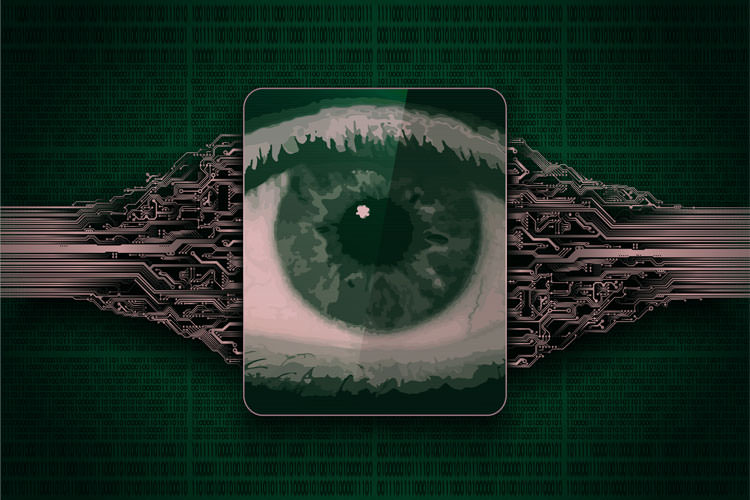

صفحه نخست ● بلاگ ● فروپاشی حریم خصوصی؛ آیا باید به نظارت دولت جهانی و فرابشری تن داد؟
فروپاشی حریم خصوصی؛ آیا باید به نظارت دولت جهانی و فرابشری تن داد؟

نیک باستروم در سخنرانی اخیرش در TED 2019، در ایدهای جنجالی اعلام کرد بشر برای جلوگیری از نابودی خود بهدست فناوری، مجبور است به نظارت دولت فراگیر هوش مصنوعی تن دهد.
شاید نام نیک باستروم برایتان آشنا باشد. وی فیلسوفی معاصر است که بیشازهمه بهدلیل پیشبینیهای ترسناکش دربارهی آیندهی بشر شهرتی جهانی یافته و هماکنون، برخی دیدگاههایش توانسته حمایت بزرگانی از دنیای فناوری، نظیر ایلان ماسک را نیز جلب کند. چندی پیش مطلبی را در زومیت منتشر کردیم که به دفاعیات یکی از دانشمندان امآیتی از «فرضیهی شبیهسازی» پرداخته بود؛ فرضیهای که ریشهی آن به یکی دیگر از ایدههای باستروم در ۱۵ سال پیش بازمیگردد که با اظهارات اخیر ماسک، باردیگر در محافل علمی جهان بر سر زبانها افتاد.
گویا سناریوهای تاریک باستروم برای جهان تمامی ندارد. اینبار نویسندهی کتاب «برهان شبیهسازی» میگوید تکنولوژی مخرب میتواند بشر را نابود کند و تنها راه جلوگیری از آن، استقرار دولت جهانی مبتنیبر هوش مصنوعی است. جملاتی که شاید بسیاری را به یاد دنیای تاریکی میاندازد که ۷۰ سال پیش، جورج اورل در رمان معروف ۱۹۸۴ از آن سخن میگفت.
ناظر کبیر (برادر بزرگ)
باستروم، فیلسوف شهیر دانشگاه آکسفورد، ۱۵ سال پس از ارائهی دیدگاههای جنجالبرانگیزش دربارهی ماهیت واقعی بشر، نظریهی دورازذهن دیگری در چنته دارد و اینبار هم گویا جایی برای خوشبینی به آیندهی بشر نمیبیند.
چهارشنبهی گذشته، نیک باستروم در کنفرانس TED 2019 در ونکوور کانادا، روی سکو رفت تا برخی از نکات مربوطبه آخرین مقالهی خود را بهنام «فرضیهی جهان آسیبپذیر» با جهانیان بهاشتراک بگذارد.
بشر برای جلوگیری از نابودی خود بهوسیلهی فناوری، نیازمند نظارت دولتی فراگیر است
توپهای سیاه
باستروم استدلال خود را با مثالی از گلدانی بزرگ پُر از توپ توضیح میدهد که پیش روی بشر قرار دارد. هرکدام از این توپها با رنگهای مختص به خود، نمایانگر ایدهای متفاوت یا فناوری جدیدی هستند: سفید (بهمعنای مفید) و خاکستری (بهمعنای نسبتا مضر، اما نه ویرانگر) و سیاه (بهمعنای ویرانگر و نابودکنندهی تمدن بشر).
باتوجهبه مدل تعریفشدهی باستروم، بشر بهطور مداوم توپی از درون این گلدان بیرون میکشد که دیگر به گلدان بازگرداندنی نیست و از بخت ما، هنوز کسی توپ سیاهی بیرون نکشیده است. در اینجا، وی تأکید ویژهای بر کلمهی «هنوز» دارد. باستروم در نوشتههایش میگوید:
اگر تحقیقات علمی و تکنولوژیکی همینطور ادامه یابد، درنهایت، به آن (توپ سیاه) خواهیم رسید و آن را بیرون خواهیم کشید.
بنابر گفتهی باستروم، تنها دلیلی که هنوز توپ سیاهی بیرون نکشیدهایم، بخت بلند ما بوده است. از دیدگاه وی، حتی پدیدهای مانند «گرمایش جهانی» نیز میتوانست بسیار بدتر از آن چیزی باشد که امروز، شاهدش هستیم.
خلع آزادی
باستروم بر این باور است که توپ سیاهی که بنیان تمدن ما را نشانه خواهد رفت، نهایتا محصولی از فناوری خودِ ما خواهد بود؛ ازاینرو، باید با اعمال نظارت روی خودمان، از ظهور چنین فناوری مخربی جلوگیری کنیم. او میافزاید برای جلوگیری از وقوع چنین اتفاقی، به دولت جهانی کاراتری نیاز داریم؛ دولتی که بتواند بهسرعت هرگونه فناوری بالقوهی ویرانگری را غیرقانونی اعلام کند.
درادامه، او میگوید به نظارت چنین دولت بزرگی باید تن دهیم و هر فرد باید نوعی تجهیز بهشکل گردنبند را با عنوان «برچسب آزادی» بههمراه داشته باشد تا این سیستم بتواند آنچه فرد میبیند و میشنود، با دوربینها و میکروفنهای نصبشده مخابره کند.
این برچسبها به «ایستگاههای نظارت میهنپرستان» یا «مراکز آزادی» متصل میشوند تا در آنجا، هوشهای مصنوعی تمامی دادهها را کنترل کنند و چنانچه کوچکترین نشانهای از توپ سیاه تشخیص داده شود، افرادی با عنوان «افسران آزادی» برای رسیدگی به آن گماشته خواهند شد.
شیاطین دوقلو
پیشتر نیز مواردی از سوءاستفادهی افراد را از سامانههای نظارت جمعی شاهد بودهایم؛ اما آن سیستمها بسیار ناقصتر از آن چیزی بهنظر میرسند که در نظریهی باستروم پیشنهاد شده است. چنین اظهاراتی بهویژه در کنفرانسی مانند TED بسیار بحثبرانگیز جلوه میکند که امسال روی استراتژیهای تضمین حریم خصوصی در عصر دیجیتال تمرکز داشته است. البته، خود وی نیز بر این موضوع صحه گذاشته که ممکن است چنین سناریویی اصلا روی ندهد.
بااینحال، از دیدگاه باستروم، چنانچه قرار باشد میان تندادن به کنترل تمامی رفتارهای خود و نابودی کل تمدن یکی را انتخاب کنیم، شاید بهتر است گزینهی اول را انتخاب کنیم. او در خلال کنفرانس TED رو به حضار گفت:
واضح است جنبههای منفی بیشمار و خطرهای فراوانی در تندادن به سیستم نظارت جمعی یا دولت جهانی وجود دارد. من فقط قصد دارم به این اشاره کنم که چنانچه بخت با ما یار باشد، این تنها راه پیش روی دنیا است که بتواند از (عواقب) انتخاب توپ سیاه جان سالم بهدر ببرد.
روزبه خانجانی-زومیت-